Presentación del Sistema
Instituto Frontera AC
·
· ·
, ·
, ·
Instalación y mantenimiento de sistemas de inscripciones premium para colegios y universidades privadas en LATAM.
Agenda
El mapa de hoy
Cinco paradas, en este orden — sin vueltas.
1
El Rayos X
Sus números, su embudo, sus dos caminos.
2
Por qué SuperLeads
Nuestra creencia y nuestro propósito.
3
Las herramientas
Sistema, metodología y tecnología, en un loop que aprende.
4
Precios
Su inversión, clara y sin sorpresas.
5
Conclusión
Cómo seguimos y qué sigue.
El diagnóstico
El semáforo
de
| Métrica | Valor | Lectura |
|---|---|---|
| Tasa de conversión (lead → alumno) | ||
| Tasa cita → alumno | ||
| Ocupación instalada | ||
| ROAS (retorno sobre inversión publicitaria) | ||
| % de alumnos por referido |
El diagnóstico
Su embudo de admisión
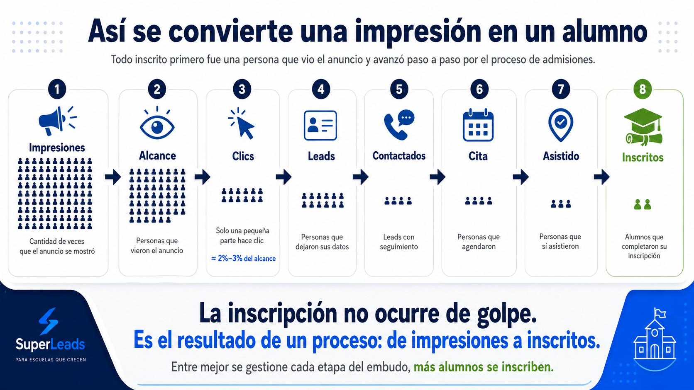
Ocho pasos separan un anuncio de un alumno inscrito. Hoy, de cada 100 se pierden en el camino.
El diagnóstico
Dónde se pierde el prospecto
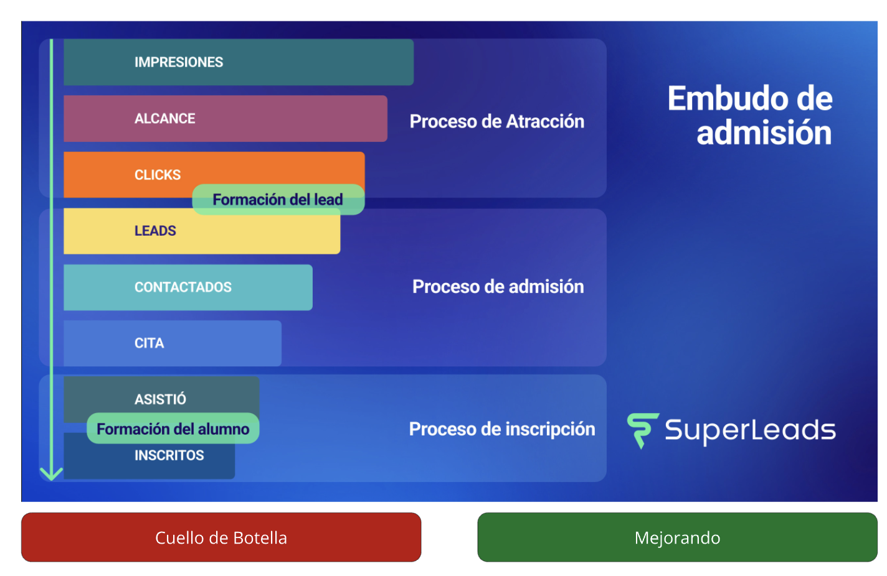
Ustedes son buenísimos atrayendo. La turbulencia vive en «Formación del lead» y «Formación del alumno» — ahí entra SuperLeads.
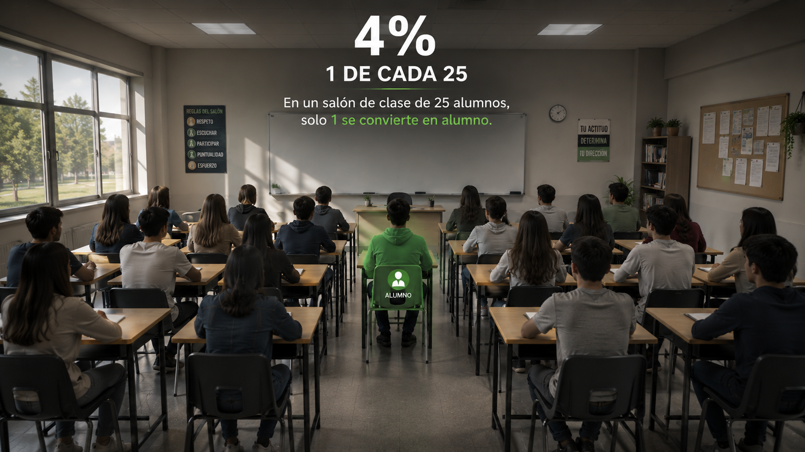
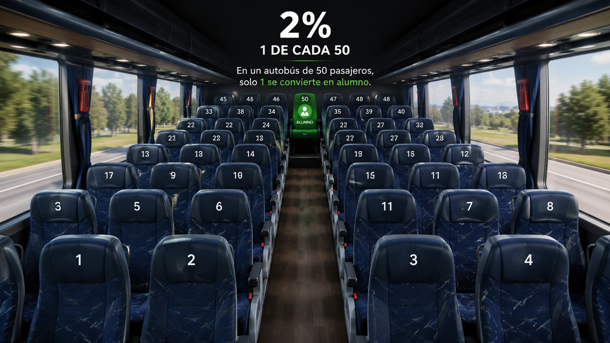
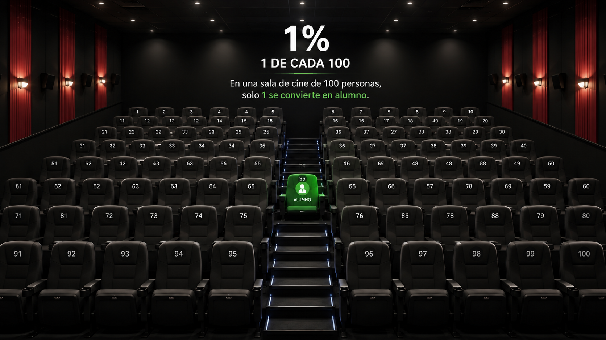
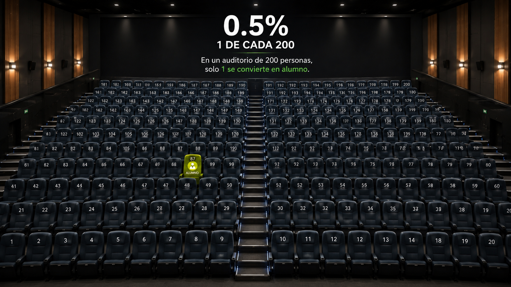
Así se ve su de conversión hoy
El diagnóstico
Cuánto vale un decimal
al año, por cada 0.1 punto que suba su tasa de conversión — con los mismos prospectos que ya tienen.
El diagnóstico
La silla vacía
lugares vacíos hoy, de instalados.
es lo que valen esas sillas vacías, en valor de vida del alumno.
El diagnóstico
Los dos caminos
lugares vacíos por llenar — la meta
↓
Camino 1 · Más volumen
+
prospectos adicionales al año, a la misma tasa de conversión de hoy.
Camino 2 · Mejor conversión
+
alumnos al año, con solo puntos más de conversión — misma inversión.
Camino 2B · Para lograr la meta completa
tasa de conversión
+
prospectos extra al año · en total
Por qué existimos
Creemos que ningún alumno debería perder la oportunidad de estudiar en el colegio correcto por culpa de un mal proceso de admisión — y que los colegios deben ser rentables para poder cumplir su misión educativa.
Propósito SuperLeads
Darle poder a los colegios y universidades para que inscriban fácilmente a millones de estudiantes.
El sistema
La herramienta correcta multiplica
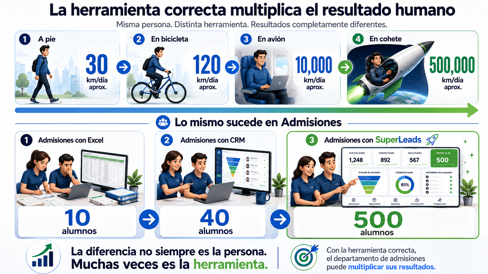
El sistema
Sistema + Metodología + Tecnología
Sistema de Inscripciones SuperLeads
Metodología
CRM
El CRM es solo la tecnología — por eso es el círculo chiquito. Encima va la metodología: qué decir, cuándo y por qué. Y encima, el sistema completo de inscripciones que opera todo junto.
Para papás y futuros alumnos
- 📝 Formularios educativos
- 📅 Agendas expuestas
- 📂 Formulario de documentación
- 🎪 Formulario de eventos
- 🔗 Generador de referidos
Herramientas internas
- 💬 Conversaciones unificadas
- 🗂️ Contactos y listas inteligentes
- 🎛️ CRM para admisiones
- 📊 Tablero de control
Aceleradores
- ⚡ Automatizaciones educativas
- 🤖 Inteligencia artificial conversacional
- ⭐ Radar de Inscripción
💡 Con SuperLeads no contratan la tecnología — contratan a la empresa que tiene la tecnología y se especializa en inscripciones.
El sistema
Una red que aprende cada semana
70+colegios operando este loop
1M+prospectos al año en la red
5países de habla hispana
El sistema
Hasta aquí, el mapa
✓
El Rayos X
Sus números, su embudo, sus dos caminos.
✓
Por qué SuperLeads
Nuestra creencia y nuestro propósito.
⭐
Ahora: las herramientas
Sistema, metodología y tecnología, en un loop que aprende.
○
Precios
Su inversión, clara y sin sorpresas.
○
Conclusión
Cómo seguimos y qué sigue.
El sistema
El Radar de Inscripción
Análisis de probabilidad de inscripción, en tiempo real
Nos dedicamos a una sola cosa: inscribir más alumnos.
1
Cada acción suma o resta puntos. Todo lo que pasa en el sistema — mensajes, citas, visitas, silencios — mueve el puntaje de cada prospecto.
2
Probabilidad y estadística. El nivel de detalle es tan intenso que sabemos qué prospectos tienen más probabilidad de inscribirse — y de monetizar.
3
Los top, listos para ti. Te ponemos arriba a los que están deseosos de que les marques y les ayudes a terminar su inscripción.
Tener acceso a esta información cambia la perspectiva.
Top prospectos de hoy
⭐
⭐
Familia Hernández
Visita hecha · quiere cerrar ya
97 pts
⭐
Familia Robles
Cita agendada · alta intención
93 pts
⭐
Familia Paredes
Documentación casi completa
89 pts
⭐
con máximo puntaje hoy
en valor de vida, esperando una llamada
El sistema
El generador de referidos
Genera tu link de referidos
Escribe tu nombre y dale en Generar link. Se crea tu URL con referido_por automáticamente.
Nombre:
👤 Ej.
🚀 Generar link
Tu link
Aquí aparecerá tu link…
📋 Copiar
🔴 Hoy: solo llega por referido
años de historia y una bolsa de referidos sin explotar. Cada persona genera un link único, estático y eterno — pagable con dinero o con estatus.
El sistema
De WhatsApp a alumno
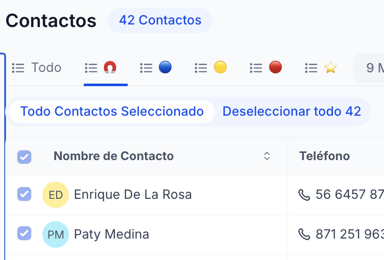
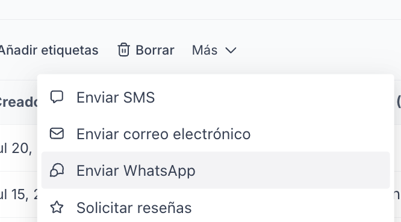
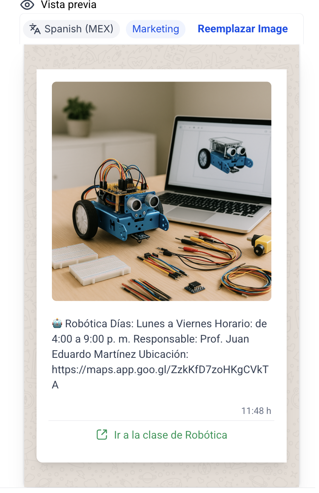
📌 Ojo: si el papá les escribe primero, no cuenta como conversación nueva — platican todo lo necesario sin costo extra. Solo cuenta cuando SuperLeads abre con una plantilla.
El sistema
Constanza contesta a las 11pm

24/7/365
Constanza
la agente IA generadora de citas #1 — agenda mientras ustedes duermen.
11:47 pm
Hola, buenas noches 🙏 ¿tienen espacio en 3ro de primaria?
Constanza · 11:47 pm
¡Con gusto! Le comparto tres opciones para agendar su visita:
a) Lun 9:00 AM b) Lun 12:00 PM c) Mar 9:00 AM
Solo escriba la letra.
a) Lun 9:00 AM b) Lun 12:00 PM c) Mar 9:00 AM
Solo escriba la letra.
El sistema
La Torre de Control
Ustedes ven todo, en tiempo real
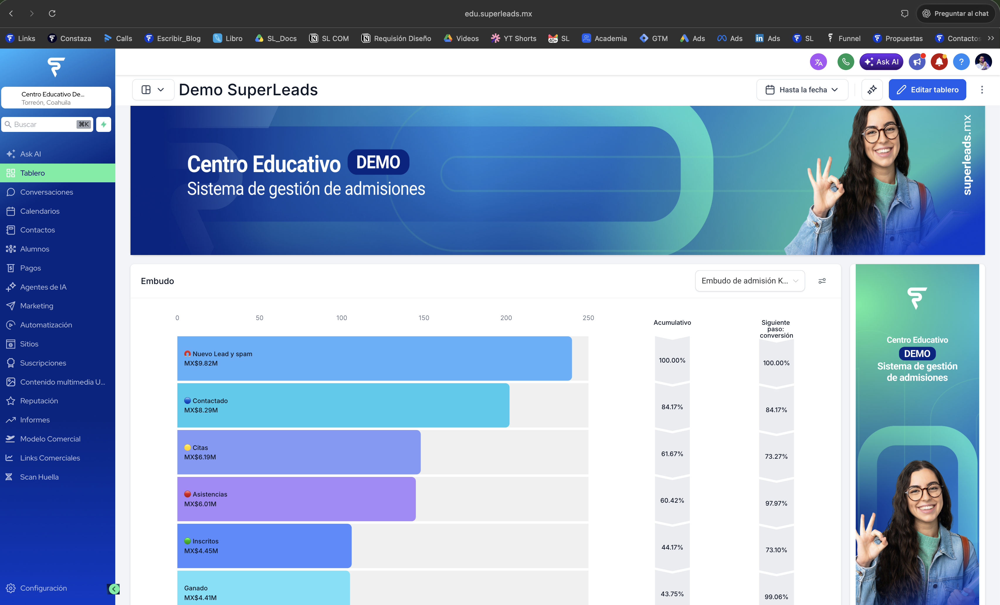
Un colegio operando hoy
El CRM: sus alumnos en orden
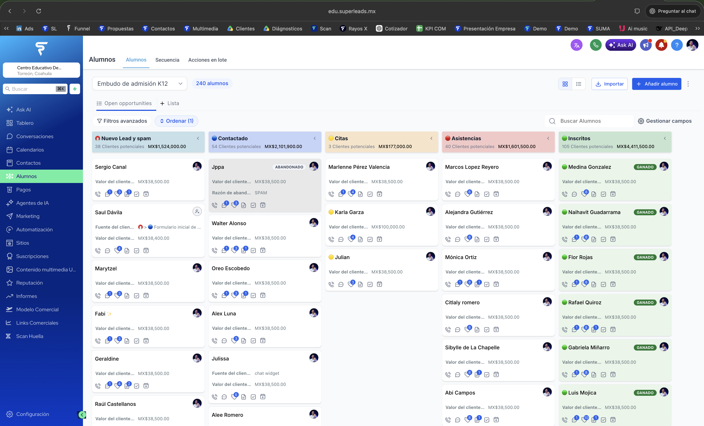
Sus alumnos y cada prospecto nuevo, en perfecto orden — moviéndose con automatizaciones, secuencias y metodología.
Un colegio operando hoy
Academia SuperLeads
La capacitación vive dentro del mismo sistema
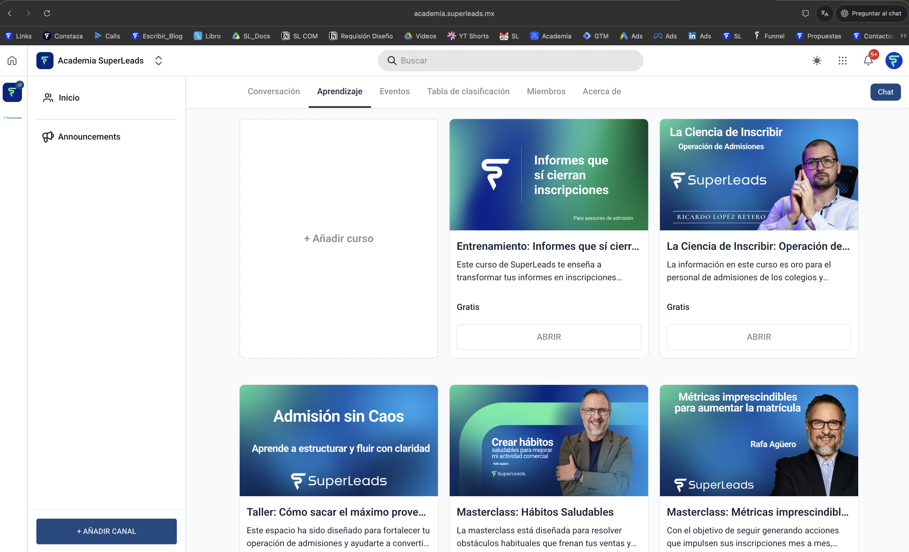
Lo mínimo que su equipo de admisiones — hoy personas — necesita dominar: el sistema y la forma de inscribir.
Un colegio operando hoy
El calendario que se llena solo
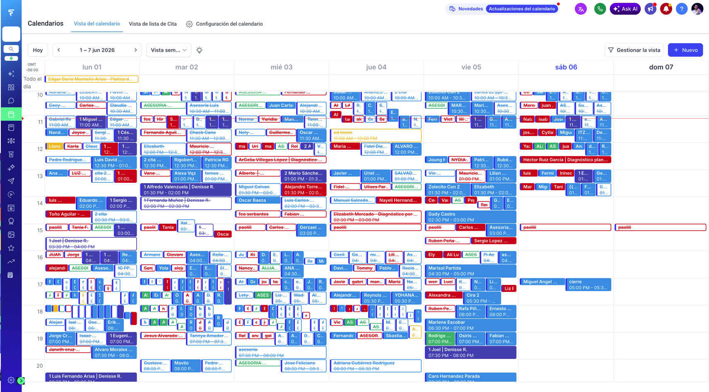
Antes de ser alumnos, son citas — y hoy de sus citas termina en inscripción. Un calendario lleno precede a una matrícula llena.
Un colegio operando hoy
La Máquina de Atracción
El marketing, estructurado — el músculo detrás de Atracción Inteligente
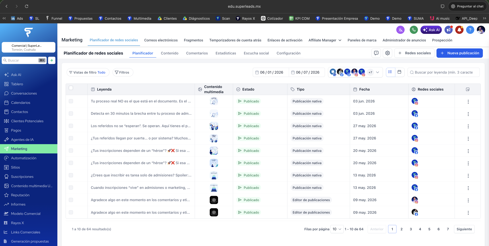
Todos sus alumnos, en algún punto, no sabían que ustedes existían. Hacer ruido de forma estructurada es lo que hoy les trae prospectos al año.
Prueba
Caso real
— Ricardo López Reyero, SuperLeads
El sistema
Implementación avanzada de sistemas
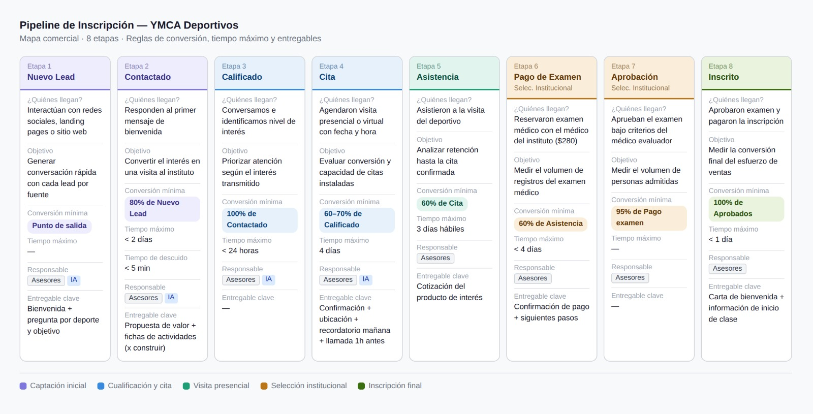
Sabemos lo mínimo que tiene que tener un sistema de inscripciones para funcionar — y se lo implementamos en tiempo récord, porque su tiempo son alumnos.
El sistema
Lo que hacen hoy vs. lo que necesitan
Hoy
📊
para seguir prospectos al año
🙋
personas de admisiones, sin sistema de puntaje
🎲
Decisiones por intuición, sin medir con claridad
Lo que necesitan
⚙️
Tecnología especializada en admisiones educativas
📈
Procesos medibles, replicables y con dueño
🤝
Un socio que opera la rueda con ustedes
La inversión
Su inversión
| Producto | Detalle | Precio |
|---|---|---|
| Implementación y capacitación | Migración, embudo configurado, capacitación completa del equipo | $0 · antes |
| CRM SuperLeads | Usuarios y prospectos ilimitados, agente IA, embudo configurado | |
| Dirección Estratégica | Departamento dedicado, metodología, acompañamiento quincenal | |
| Atracción Inteligente | Generación de demanda calificada — leads que sí convierten |
Anual · ciclo de 10 meses
+ IVA
Mensual
/mes + IVA
Al día
/día
🎯 La conversación correcta no es lo que cuesta el sistema — es esto: lugares disponibles, una tasa de conversión de por mejorar, y un ingreso extra posible de al año. Ese dinero es real — se alcanza contratando tecnología. Enfoquémonos en crecer eso.
La inversión
Inversión asimétrica
alumnos extra
y su inversión queda cubierta. Ese es todo el riesgo — no hay más.
Riesgo conocido y acotado · crecimiento abierto — tecnología y metodología para incrementar su matrícula.
La inversión
Costos variables — eficientar, no ahorrar
| Canal | Costo |
|---|---|
| 💬 Messenger e Instagram | $0 |
| 📧 Recepción de correos | $0 · ilimitado |
| 💚 Nueva conversación de WhatsApp | |
| ✉️ Correo saliente individual | |
| 📞 Llamada con grabación | / minuto |
| 🔌 Webhook / API | |
| 🤖 IA conversacional (Constanza) | /mes |
📌 Ojo: si el papá o el alumno escribe primero, no es «conversación nueva» — solo cuenta cuando SuperLeads abre con plantilla. Mientras dure el intercambio, no hay costo extra por mensaje.
La inversión
Cómo funciona el saldo
Un solo saldo de comunicación — cualquier canal lo usa para hablar con el prospecto, y cada mensaje mejora la probabilidad de inscripción.
💬WhatsApp
✉️Email
📞Llamada
📩SMS
💭Messenger
📸Instagram DM
↓ ↓ ↓ ↓ ↓ ↓
💰 Saldo de comunicación — un solo pozo, todos los canales
se usa y se recupera cada mes
Gasto fijo
CRM + Dirección Estratégica. Mensual, predecible — no quieren que suba, lo quieren mantener.
Gasto variable
El saldo de comunicación: sube en meses de campaña, baja en meses tranquilos — fluctúa, y se recupera con cada inscripción.
No es ahorrar comunicación — es usar ese recurso donde más mejora la probabilidad de inscripción.
Siguiente paso
Las primeras semanas
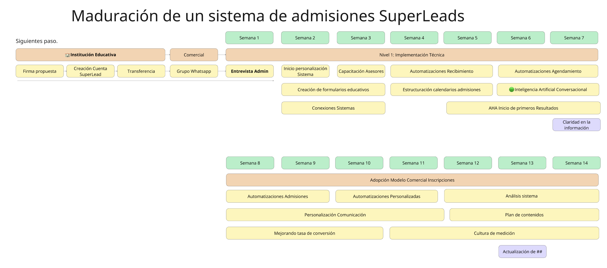
Semana 5–6: los primeros «aha moments» — y ya no hay vuelta atrás.
Honestidad
Lo que no les vamos a pedir
✕
No les prometemos alumnos garantizados
Los llevamos matemáticamente a lo máximo que sabemos — nunca más arriba de eso.
✕
No sobrevendemos
Si algo no aplica para ustedes, se los decimos de frente.
✕
No somos una agencia que solo vende servicios
Operamos el sistema con ustedes — la responsabilidad del resultado es compartida.
✕
No venimos a reemplazar a su equipo
Primero les damos el sistema y la capacitación — con eso, es el equipo que ya tienen el que va a crecer.
Siguiente paso
Lo que sigue
1
Hoy
Les mando la presentación y la propuesta formal, por WhatsApp y correo.
2
Esta semana
La leen con calma, la revisan con el contador.
3
Próxima semana
Nos vemos para firmar y arrancar el proyecto.
Anexo · Cómo se activa
¿Qué sigue?
1
Creación de la cuenta SuperLeads
Lo más simple va primero: dos clics y su cuenta existe. Cobro único de (constancia y situación fiscal).
2
Firma de la propuesta
El día que ustedes consideren óptimo. Factura en la moneda elegida — MXN (Afirme, 100% mexicana) o USD por link de pago.
3
Alta y transferencia
La inversión en tecnología + metodología + soporte + estrategia. Esta transferencia no es un pago: es adquirir un sistema de inscripciones funcionando para su colegio.
⭐ Al alumno salimos gratis — y de ahí, nos quedamos buscando subir su matrícula.
Anexo · Preguntas frecuentes
Preguntas antes de activar cuenta
¿Cuándo veo resultados?
Cambios visibles desde la semana 2. Los «aha moments» fuertes llegan en la semana 5–6.
¿Podemos modificar la IA?
Sí, 100%. Les damos la base mínima ya calibrada; ustedes le meten mano cuando quieran.
¿Y si no tenemos equipo de admisiones armado?
Les ayudamos a construir el perfil de contratación y a capacitar rápido a quien entre.
¿Qué pasa si algo no lo tienen resuelto?
Si lo necesitan y no lo tenemos, se los hacemos. Punto.
Ustedes tienen a .
Nosotros somos un sistema de inscripciones hecho y derecho — exclusivamente para educación privada.
Nosotros somos un sistema de inscripciones hecho y derecho — exclusivamente para educación privada.
Hace sentido juntarnos. Probemos — y veamos.
· — los esperamos adentro.